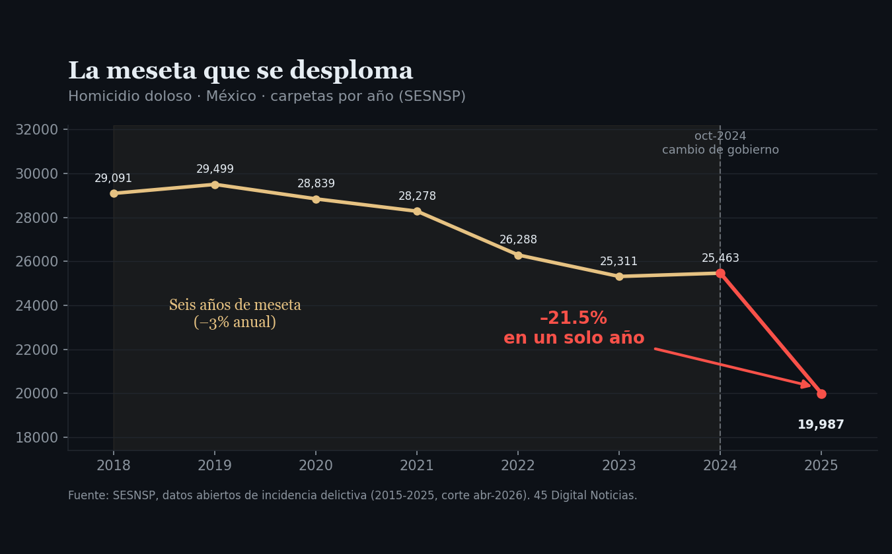
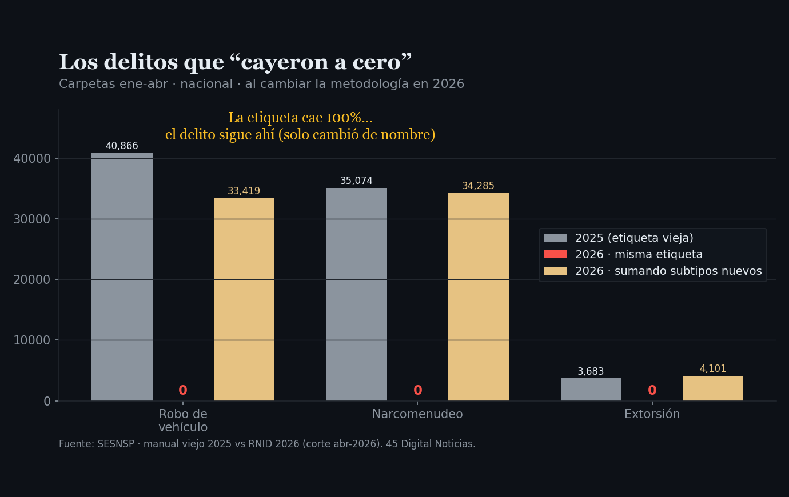
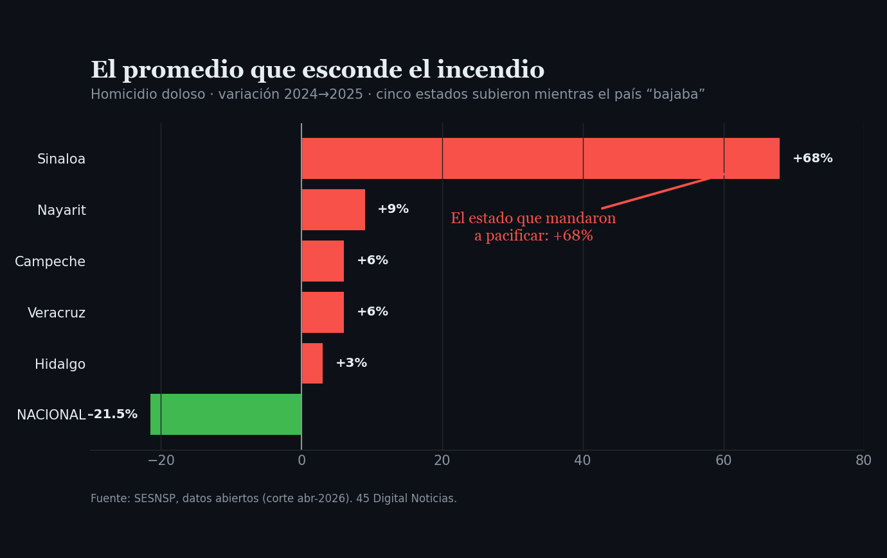
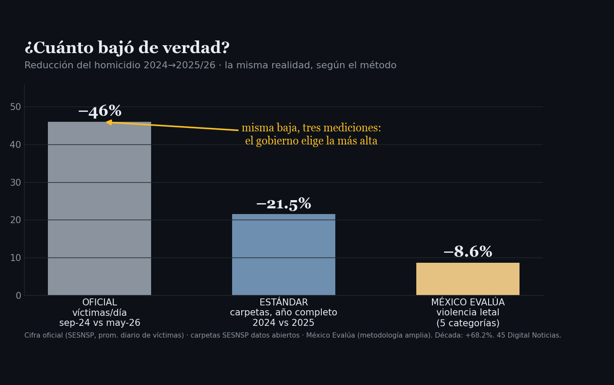

El Gotham que no cuadra
El gobierno presume que el homicidio cayó 46 por ciento. Con los propios datos del SESNSP, cuatro palancas explican por qué esa cifra es verdadera en su aritmética y falsa en lo que esconde. La baja real, según México Evalúa: 8.6 por ciento.

Nota de actualización (20 de junio de 2026): las cifras de homicidio doloso de 2025 se ajustaron al corte más reciente del SESNSP (mayo 2026): de 19,987 carpetas y −21.5% en el corte de febrero, a 20,191 y −20.7%. El propio Secretariado revisó al alza los casos de 2025 reportados con retraso; los años 2016 a 2024 no cambiaron y la tesis de esta columna se mantiene.
Al secretario federal de Seguridad, Omar García Harfuch, la prensa le puso un apodo que conviene tomar en serio: Batman. Y la metáfora rinde más de lo que sus autores imaginaron, porque Gotham, en casi todas las versiones del mito, ya estaba podrida y en llamas antes de que apareciera el héroe. La ciudad no esperaba un salvador: esperaba que alguien le dijera que el incendio era, en realidad, un atardecer.
El gobierno federal sostiene que el homicidio doloso cayó 46 por ciento, su cifra más alta: el promedio diario de víctimas entre septiembre de 2024 y mayo de 2026. La cifra está sustentada en registros oficiales, y ahí está la trampa: es verdadera en su aritmética y engañosa en lo que esconde. Conviene desarmarla pieza por pieza, con los propios datos del Secretariado Ejecutivo del Sistema Nacional de Seguridad Pública.
Primero, la forma de la curva. El homicidio doloso en México fue una meseta durante seis años: 29,091 carpetas en 2018, 25,463 en 2024, una bajada lentísima de alrededor de tres por ciento anual. En 2024 incluso subió 0.6 por ciento. Una serie así no se desploma 20.7 por ciento en un solo año, como ocurrió en 2025, por mérito de una estrategia de doce meses. La violencia letal tiene inercia: la mueven disputas territoriales que tardan años en armarse y años en apagarse. Una meseta que cae a pico, sin pendiente previa, no describe una pacificación. Describe un cambio en la forma de contar.

Segundo, las etiquetas. En febrero de 2026 el Secretariado estrenó una nueva metodología, el Registro Nacional de Incidencia Delictiva, aprobada el 2 de septiembre de 2025 y acordada desde diciembre de 2024, dos meses después del cambio de gobierno. Con ella, delitos enteros cambiaron de nombre. En los datos abiertos, el robo de vehículo pasa de 40,866 carpetas a cero, el narcomenudeo de 35,074 a cero, la extorsión de 3,683 a cero. No es que hayan terminado: se fragmentaron en subtipos nuevos. Al sumar las piezas, la extorsión incluso subió. Pero quien compare contra la serie histórica por el nombre de siempre verá caídas de cien por ciento que nunca ocurrieron. La regla cambió justo cuando más convenía, mientras el gobierno ya anunciaba la baja.

Tercero, y es el corazón del asunto, el promedio. El menos 20.7 por ciento nacional se construye promediando estados que sí bajaron con estados que ardían. En 2025, mientras el país presumía descenso, cinco entidades subieron, y la que más subió es la bandera de la estrategia: Sinaloa. Ahí el homicidio doloso pasó de 492 carpetas en 2023 a 805 en 2024 y a 1,355 en 2025, un alza de 68 por ciento, el año más violento desde 2011 según la prensa local. A Sinaloa lo mandaron a pacificar tras la captura de Ismael “El Mayo” Zambada, y esa operación, lejos de apagar el fuego, encendió la guerra entre los Chapitos y los Mayitos que hoy deja jornadas de diez asesinatos en un día en Culiacán. Es la teoría de la escalada del propio mito: la llegada del héroe no trae paz, atrae a los villanos peores. El promedio nacional no miente sobre Sinaloa: simplemente lo entierra bajo el peso de los estados que sí bajaron.

Cuarto, la fuga. Lo que no aparece como homicidio tampoco siempre aparece como nada: 2025 fue el peor año en el registro de personas desaparecidas. El cuerpo que no se cuenta como muerto se cuenta, si acaso, como ausente, en otro registro que no entra en el tablero de la seguridad.
Sumadas las cuatro palancas, la magnitud se derrite. La misma baja admite tres lecturas: el gobierno presume 46 por ciento, que es el promedio diario de víctimas entre su mejor mes y su peor mes; la medida estándar, las carpetas a lo largo del año, da 20.7 por ciento; y México Evalúa, midiendo la violencia letal con una metodología amplia de cinco categorías, estima que el descenso real entre 2024 y 2025 fue de 8.6 por ciento, mientras la década acumula un aumento de 68.2 por ciento. La diferencia entre 8.6 y 46 no está en las calles de México: está en la elección de la ventana, en el cambio de etiquetas y en la aritmética del promedio.

Baudrillard llamó simulacro al momento en que el mapa deja de representar el territorio y empieza a ocupar su lugar. La cifra de seguridad cruzó esa línea. Ya no es un termómetro que describe el país: es un país paralelo, estadísticamente habitable, que se presenta en la conferencia matutina mientras el territorio real arde en Culiacán, repunta en Morelos y rompe récords de desaparecidos. A mi juicio, y lo ofrezco como opinión, ese es el riesgo mayor: no que el gobierno mienta, sino que termine gobernando el mapa en lugar del territorio, atendiendo la cifra en vez de la calle, porque la cifra ya le da la razón.
Gotham, antes de Batman, ardía y nadie llevaba la cuenta. Después de Batman, sigue ardiendo, pero ahora hay quien jura, con números en la mano, que es de noche y todo está tranquilo. El problema no es el héroe. Es que aprendimos a confundir el reporte con la realidad.
- Jean Baudrillard, Cultura y simulacro (Éditions Galilée, 1981; ed. española Kairós, 1978/2007). Ficha editorial
- Homicidio doloso nacional y por estado, 2015-2025 (carpetas de investigación): datos abiertos de incidencia delictiva del SESNSP, corte abril de 2026. SESNSP — datos abiertos
- Cambio de metodología: del Manual CNSP/38/15 al Registro Nacional de Incidencia Delictiva (RNID); acuerdo de diciembre de 2024, aprobación del 2 de septiembre de 2025, publicación en febrero de 2026. Manual metodológico RNID (PDF) · SESNSP — nueva metodología
- Críticas a la comparabilidad y al momento del cambio. Expansión: “El SESNSP y el truco del ilusionista” · Proceso: “los datos de homicidios ya no son válidos”
- Cifra oficial del −46%: promedio diario de víctimas de homicidio doloso, de septiembre de 2024 (86.9 por día) a mayo de 2026 (47 por día), según el SESNSP. El Universal
- Estimación de violencia letal real (−8.6% entre 2024 y 2025; +68.2% en la década), México Evalúa. nexos · Seguridad
- Sinaloa, año más violento desde 2011; guerra Chapitos-Mayitos tras la captura del Mayo Zambada. Proceso · Infobae (jornada de 10 homicidios)
- Tablero ciudadano con los 55 delitos del catálogo, los 32 estados y el detector de reclasificación: Expediente Inseguridad México.
Las ligas van a la vista para que cualquiera compruebe por su cuenta. Si alguna dejó de resolver, escríbenos y la reponemos.
SRVO